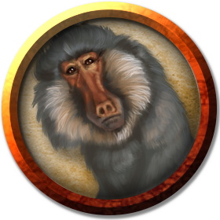
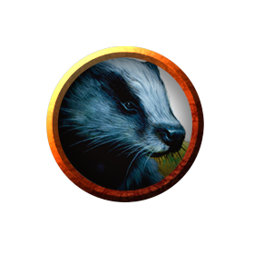
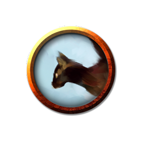

Using Wild Shape
Stuff about using Wild Shape
Beasts, by challenge rating
CR 0

Baboon
Small beast, unaligned
AC: 12
HP: 3 (1d6)
SP: 30 ft., climb 30 ft.
| STR |
DEX |
CON |
INT |
WIS |
CHA |
| 8 (-1) |
14 (+2) |
11 (+0) |
4 (-3) |
12 (+1) |
6 (-2) |
Senses passive perception 11
Pack Tactics. the baboon has advantage on an attack roll against a creature if at least one of the baboon's allies is within 5 feet of the creature and the ally isn't incapacitated.
Actions
Bite. Melee Weapon Attack: +1 to hit, reach 5 ft., one target. Hit: 1 (1d4 - 1) piercing damage.
Environment: Forest, Hill
Source: MM, 318.

Badger
Tiny beast, unaligned
AC: 10
HP: 3 (1d4 + 1)br>
SP: 20 ft., burrow 5 ft.
| STR |
DEX |
CON |
INT |
WIS |
CHA |
| 4 (-3) |
11 (+0) |
12 (+1) |
2 (-4) |
12 (+1) |
5 (-3) |
Senses darkvision 30 ft., passive perception 11
Keen Smell. The badger has advantage on Wisdom (Perception) checks that rely on smell.
Actions
Bite. Melee Weapon Attack: +2 to hit, reach 5 ft., one target. Hit: 1 piercing damage.
Environment: Forest
Source: MM, page 318. Also found in TftYP; ToA; CM; CoS; WBtW. Available in the SRD.

Cat
Tiny beast, unaligned
AC: 12
HP: 2 (1d4)
SP: 40 ft., climb 30 ft.
| STR |
DEX |
CON |
INT |
WIS |
CHA |
| 3 (-4) |
15 (+2) |
10 (+0) |
3 (-4) |
12 (+1) |
7 (-2) |
Skills Perception +3, Stealth +4
Senses passive perception 13
Keen Smell. The cat has advantage on Wisdom (Perception) checks that rely on smell.
Actions
Claws. Melee Weapon Attack: +0 to hit, reach 5 ft., one target. Hit: 1 slashing damage.
Environment: Desert, Forest, Grassland, Urban
Source: MM, 320.
CR 1/8
CR 1/4
CR 1/2